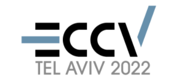

2nd Causality in Vision
ECCV 2022 Workshop, Data-Time TBD, Virtual
Call for Papers
We invite submissions of papers related to the applications/theories of causality in computer vision, including but not limited to the following:
- Causal discovery for high-dimensional visual data
- Causal inference for fair and explainable deep models
- Causal inference for robust visual models
- Causality combined with unsupervised, supervised, and reinforcement learning
- Learning visual causal generative mechanisms
- Structural causal models for heterogeneous and multimodal data
- Novel models combined vision and causality
- Visual causality data collection, benchmarking, and performance evaluation
Submission Details
Released Soon ~( ´▽｀)~